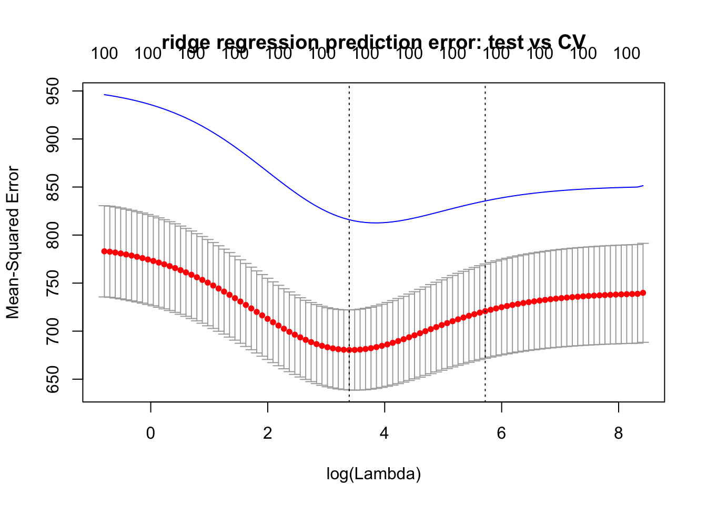
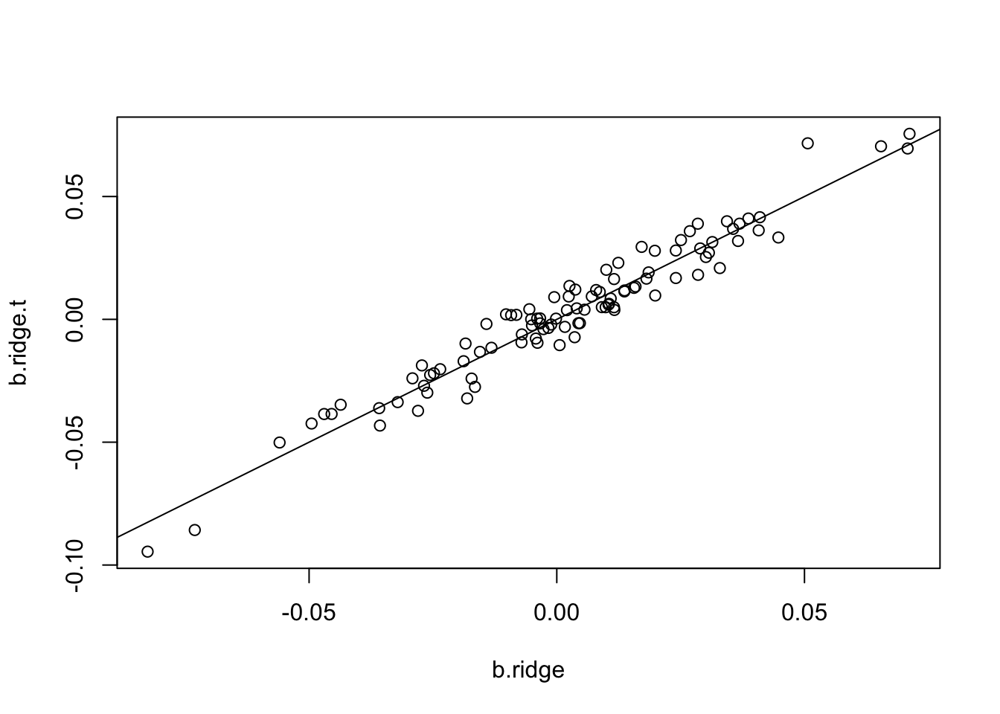

hw2
zihao12
2021-04-10
Last updated: 2021-04-11
Checks: 7 0
Knit directory: stat348_hw/
This reproducible R Markdown analysis was created with workflowr (version 1.6.2). The Checks tab describes the reproducibility checks that were applied when the results were created. The Past versions tab lists the development history.
Great! Since the R Markdown file has been committed to the Git repository, you know the exact version of the code that produced these results.
Great job! The global environment was empty. Objects defined in the global environment can affect the analysis in your R Markdown file in unknown ways. For reproduciblity it’s best to always run the code in an empty environment.
The command set.seed(20210404) was run prior to running the code in the R Markdown file. Setting a seed ensures that any results that rely on randomness, e.g. subsampling or permutations, are reproducible.
Great job! Recording the operating system, R version, and package versions is critical for reproducibility.
Nice! There were no cached chunks for this analysis, so you can be confident that you successfully produced the results during this run.
Great job! Using relative paths to the files within your workflowr project makes it easier to run your code on other machines.
Great! You are using Git for version control. Tracking code development and connecting the code version to the results is critical for reproducibility.
The results in this page were generated with repository version 2e6b4fe. See the Past versions tab to see a history of the changes made to the R Markdown and HTML files.
Note that you need to be careful to ensure that all relevant files for the analysis have been committed to Git prior to generating the results (you can use wflow_publish or wflow_git_commit). workflowr only checks the R Markdown file, but you know if there are other scripts or data files that it depends on. Below is the status of the Git repository when the results were generated:
Ignored files:
Ignored: .Rhistory
Ignored: .Rproj.user/
Untracked files:
Untracked: analysis/glmnet_intro.Rmd
Untracked: data/four_salmon_pops.csv
Untracked: data/zip.test
Untracked: data/zip.train
Untracked: hw/
Untracked: script/
Note that any generated files, e.g. HTML, png, CSS, etc., are not included in this status report because it is ok for generated content to have uncommitted changes.
These are the previous versions of the repository in which changes were made to the R Markdown (analysis/hw2.Rmd) and HTML (docs/hw2.html) files. If you’ve configured a remote Git repository (see ?wflow_git_remote), click on the hyperlinks in the table below to view the files as they were in that past version.
| File | Version | Author | Date | Message |
|---|---|---|---|---|
| Rmd | 2e6b4fe | zihao12 | 2021-04-11 | hw2 update |
| html | 147c9c0 | zihao12 | 2021-04-11 | Build site. |
| Rmd | f435235 | zihao12 | 2021-04-11 | update hw2 |
| html | ecec9a6 | zihao12 | 2021-04-11 | Build site. |
| Rmd | 006a46b | zihao12 | 2021-04-11 | hw2 update |
| html | 60e1f48 | zihao12 | 2021-04-11 | Build site. |
| html | a4e91b3 | zihao12 | 2021-04-11 | Build site. |
| Rmd | 50c9f67 | zihao12 | 2021-04-11 | wflow_publish(“analysis/hw2.Rmd”) |
rm(list = ls())
library(glmnet)
library(stats)Problem A
i) Investigate glmnet
simulate_data1 <- function(p, n_train, n_test, n_sd = 25, seed = 123){
set.seed(seed)
n = n_train + n_test
X = matrix(rnorm(n*p),ncol=p)
b = rnorm(p)
e = rnorm(n,0,sd=n_sd)
Y = X %*% b + e
return(list(b = b,
X_train = X[1:n_train,], X_test = X[(n_train + 1):n,],
y_train = Y[1:n_train], y_test = Y[(n_train + 1):n]))
}(a) compare CV results with test
Simulate some independent test data from the same model and check that the prediction error of different methods is comparable with the CV results.
data_sim <- simulate_data1(p = 100, n_train = 500, n_test = 500)Ridge regression:
cv.ridge = cv.glmnet(data_sim$X_train,data_sim$y_train,alpha=0, nfolds = 10)
Y.ridge = glmnet(data_sim$X_train,data_sim$y_train,alpha=0)
Yhat_test = predict(Y.ridge, newx = data_sim$X_test, s = cv.ridge$lambda)
err_test = colMeans((Yhat_test - data_sim$y_test)^2)
ylim = c(min(cv.ridge$cvm - cv.ridge$cvsd), max(err_test))
plot(cv.ridge, ylim = ylim, main = "ridge regression prediction error: test vs CV")
lines(log(cv.ridge$lambda), err_test, col = "blue")
| Version | Author | Date |
|---|---|---|
| a4e91b3 | zihao12 | 2021-04-11 |
Lasso regression:
cv.lasso = cv.glmnet(data_sim$X_train,data_sim$y_train,alpha=1, nfolds = 10)
Y.lasso = glmnet(data_sim$X_train,data_sim$y_train,alpha=1)
Yhat_test = predict(Y.lasso, newx = data_sim$X_test, s = cv.lasso$lambda)
err_test = colMeans((Yhat_test - data_sim$y_test)^2)
ylim = c(min(cv.lasso$cvm - cv.lasso$cvsd), max(err_test))
plot(cv.lasso, ylim = ylim, main = "lasso regression prediction error: test vs CV")
lines(log(cv.lasso$lambda), err_test, col = "blue")
| Version | Author | Date |
|---|---|---|
| a4e91b3 | zihao12 | 2021-04-11 |
Comment:
- The MSE from CV is biased (always underestimated); when setting
nfoldssmaller, the bias gets smaller. - However, we can find the appropriate \(\lambda\) using CV (that also miniimizes prediction error)
(b)
Plot the (non-intercept) coefficients obtained from ridge regression and lasso against the true values used in the simulation and discuss the “shrinkage” that is occurring.
b.ridge = predict(Y.ridge, type="coefficients", s = cv.ridge$lambda.min)
b.lasso = predict(Y.lasso, type="coefficients", s = cv.lasso$lambda.min)
plot(c(0, data_sim$b), b.ridge, xlab = "b.true")
abline(a = 0, b = 1)
| Version | Author | Date |
|---|---|---|
| a4e91b3 | zihao12 | 2021-04-11 |
plot(c(0, data_sim$b), b.lasso, xlab = "b.true")
abline(a = 0, b = 1)
| Version | Author | Date |
|---|---|---|
| a4e91b3 | zihao12 | 2021-04-11 |
TODO: comment on shrinkage
(c) TODO!
Plot the estimated (non-intercept) coefficients against the “theoretical” expectations you would expect if the predictors were orthogonal. Eg the “soft thresholding” property for the Lasso. (Note that the predictors here are not orthogonal, so the theory will certainly not hold precisely - does it hold approximately?)
From the book we know, if \(X\) has orthonormal columns, coefficients are ridge are \(\hat{\beta}_{j} /(1+\lambda)\) and for lasso are \(\operatorname{sign}\left(\hat{\beta}_{j}\right)\left(\left|\hat{\beta}_{j}\right|-\lambda\right)_{+}\), where \(\hat{\beta}_{j}\) is OLS estimate.
The trick here is to standardize \(X, y\) before doing computation. Otherwise the \(\lambda\) usedin
glmnetmeans different things compared to our theoretical computation. I didn’t transform the \(\hat{\beta}\) back as that simply multplies constants to both solutions which does not affect the comparison.As we can see below, the theoretical computation
X = data_sim$X_train
X = (X - colMeans(X)) / apply(X, 1, sd)
y = data_sim$y_train
y= (y - mean(y)) / sd(y)
## ridge
cv.ridge = cv.glmnet(X, y,alpha=0, nfolds = 10)
lam = cv.ridge$lambda.min
b.ridge = glmnet(X, y, alpha = 0, lambda = lam)$beta
b.ols = lm(y ~ X)$coefficients[2:101]
b.ridge.t <- b.ols/(1 + lam)
plot(b.ridge, b.ridge.t)
abline(a = 0, b= 1)
| Version | Author | Date |
|---|---|---|
| 147c9c0 | zihao12 | 2021-04-11 |
| ecec9a6 | zihao12 | 2021-04-11 |
## lasso
cv.lasso = cv.glmnet(X, y,alpha=1, nfolds = 10)
lam = cv.lasso$lambda.min
b.ols = lm(y ~ X)$coefficients[2:101]
b.lasso = glmnet(X, y, alpha = 1, lambda = lam)$beta
b.lasso.t <- abs(b.ols) - lam
b.lasso.t[b.lasso.t < 0] = 0
b.lasso.t = b.lasso.t * sign(b.ols)
plot(b.lasso, b.lasso.t)
abline(a = 0, b= 1)
| Version | Author | Date |
|---|---|---|
| 147c9c0 | zihao12 | 2021-04-11 |
(d)
Check that indeed the sum of absolute values of the coefficients is decreasing along the lasso path. See plot blow
plot(log(Y.lasso$lambda), colSums(abs(Y.lasso$beta)), xlab = "log(lambda)", ylab = "sum of abs(beta)", main = "lasso")
| Version | Author | Date |
|---|---|---|
| ecec9a6 | zihao12 | 2021-04-11 |
(e) TODO
When you have finished, write a brief summary of what the code is doing, what you examined, and what you learned.
ii)
Note that the simulation in i) involves a non-sparse setting: every predictor has an effect on Y. This might be expected to favor ridge regression over Lasso since ridge regression tends to produce non-sparse solutions, whereas Lasso tends to produce sparse solutions. So now modify the simulation in i) to simulate a sparse scenario, where only 10 of the 100 predictors actually affect Y. [Note that you may or may not have to modify the residual variance to make the problem “not too easy” and “not too hard”]. Investigate whether ridge regression or lasso provide better predictions in this setting.
simulate_data2 <- function(n = 500, p = 100, p_nz = 10, n_sd = 25, seed = 123){
set.seed(seed)
X = matrix(rnorm(n*p),ncol=p)
b = rnorm(p)
b[(p_nz+1):p] = 0
e = rnorm(n,0,sd=n_sd)
y = X %*% b + e
return(list(X = X, y = y, b = b))
}
data_sim2 = simulate_data2()
cv.ridge = cv.glmnet(X, y, alpha = 0)
fit.ridge <- glmnet(X, y, alpha = 0, lambda = cv.ridge$lambda)
sum((fit.ridge$beta - data_sim2$b)^2)[1] 1377.635cv.lasso = cv.glmnet(X, y, alpha = 1)
fit.lasso <- glmnet(X, y, alpha = 1, lambda = cv.lasso$lambda)
sum((fit.lasso$beta - data_sim2$b)^2)[1] 921.4503The empirical loss shows that Lasso is btter in this sparse setting.
Problem C
- and (b) are hand-written
(c)
nll <- function(par, x, s){
mu = par[1]
sigma_sq = par[2]^2
n_ll = sum( log(sigma_sq + s^2) + (x - mu)^2/(s^2 + sigma_sq) )
return(n_ll)
}
ebnm_util <- function(x, s, init){
fit = optim(par = init, fn = nll, x = x, s = s, method = "BFGS", control = list(maxit = 10000))
mu = fit$par[1]
sigma_sq = fit$par[2]
pos.mean = (sigma_sq * x + s^2 * mu)/(sigma_sq + s^2)
return(list(mu = mu, sigma_sq = sigma_sq, pos.mean = pos.mean, nll = fit$value))
}
init_ebnm <- function(x, s){
thetahat = x
mu = mean(thetahat)
sigma_sq = var(thetahat)
init = c(mu, sqrt(sigma_sq))
init = c(1,1)
return(init)
}
ebnm_ <- function(x, s){
init = init_ebnm(x = x, s = s)
return(ebnm_util(x = x, s = s, init = init))
}(d)
simulate_nm <- function(mu, sigma_sq, s, n, seed = 123){
set.seed(seed)
theta = rnorm(n = n, mean = mu, sd = sqrt(sigma_sq))
x = rnorm(n = n, mean = theta, sd = s)
return(list(theta = theta, x = x, s = s))
}
n = 1000
mu = 0.5
sigma_sq = 2^2
s = replicate(n, 5)
data_nm <- simulate_nm(mu = mu, sigma_sq = sigma_sq, s = s, n = n)
theta = data_nm$theta
x = data_nm$x
s = data_nm$s
fit = ebnm_(x, s)
fit$mu[1] 0.743562fit$sigma_sq[1] 2.473991par(mfrow = c(2,2))
plot(theta, fit$pos.mean, ylab = "E(theta | X)",
main = sprintf("ebnm: loss = %f", mean((theta - fit$pos.mean)^2)))
abline(a = 0, b = 1)
plot(theta, x, ylab = "theta MLE",
main = sprintf("mle: loss = %f", mean((theta - x)^2)))
abline(a = 0, b = 1)
plot(x, fit$pos.mean,
xlab = "mle", ylab = "E(theta | X)", main = "mle vs ebnm")
abline(a = 0, b = 1)
fit2 = ebnm::ebnm_normal(x, s)
loss = list(ebnm_my = mean((theta - fit$pos.mean)^2),
ebnm_normal = mean((theta - fit2$posterior[,1])^2),
mle = mean((theta - x)^2))
loss$ebnm_my
[1] 3.363384
$ebnm_normal
[1] 3.431895
$mle
[1] 25.50565(e)
x = c(28,8,-3,7,-1,1,18,12)
s = c(15,10,16,11,9,11,10,18)
theta = ebnm_(x = x, s = s)$pos.mean
theta[1] 7.687915 7.686829 7.686269 7.686719 7.685453 7.686101 7.688075 7.686956We shrinkage all estimates to the same value, similar to what we see in https://stephens999.github.io/stat34800/eight_schools.html . This makes sense as \(s\) is very large so there may be no actual differences among schools.
sessionInfo()R version 3.5.1 (2018-07-02)
Platform: x86_64-apple-darwin15.6.0 (64-bit)
Running under: macOS 10.15.7
Matrix products: default
BLAS: /Library/Frameworks/R.framework/Versions/3.5/Resources/lib/libRblas.0.dylib
LAPACK: /Library/Frameworks/R.framework/Versions/3.5/Resources/lib/libRlapack.dylib
locale:
[1] en_US.UTF-8/en_US.UTF-8/en_US.UTF-8/C/en_US.UTF-8/en_US.UTF-8
attached base packages:
[1] stats graphics grDevices utils datasets methods base
other attached packages:
[1] glmnet_2.0-18 foreach_1.4.7 Matrix_1.2-17 workflowr_1.6.2
loaded via a namespace (and not attached):
[1] Rcpp_1.0.5 knitr_1.28 whisker_0.3-2 magrittr_1.5
[5] SQUAREM_2020.5 lattice_0.20-38 R6_2.4.1 rlang_0.4.5
[9] ashr_2.2-51 stringr_1.4.0 tools_3.5.1 grid_3.5.1
[13] ebnm_0.1-26 xfun_0.8 irlba_2.3.3 invgamma_1.1
[17] git2r_0.26.1 htmltools_0.5.0 iterators_1.0.12 yaml_2.2.0
[21] digest_0.6.25 rprojroot_1.3-2 mixsqp_0.3-46 later_1.1.0.1
[25] codetools_0.2-16 promises_1.1.1 fs_1.3.1 trust_0.1-8
[29] glue_1.4.1 evaluate_0.14 rmarkdown_2.1 stringi_1.4.3
[33] compiler_3.5.1 backports_1.1.7 truncnorm_1.0-8 httpuv_1.5.4
Comment:
ebnm::ebnm_normal, it seems my code gets better loss when \(|\mu|\) gets larger whereasebnm::ebnm_normalis better when \(\mu\) is closer to \(0\) (need more thorough comparisons; seems the default put mode on \(0\))